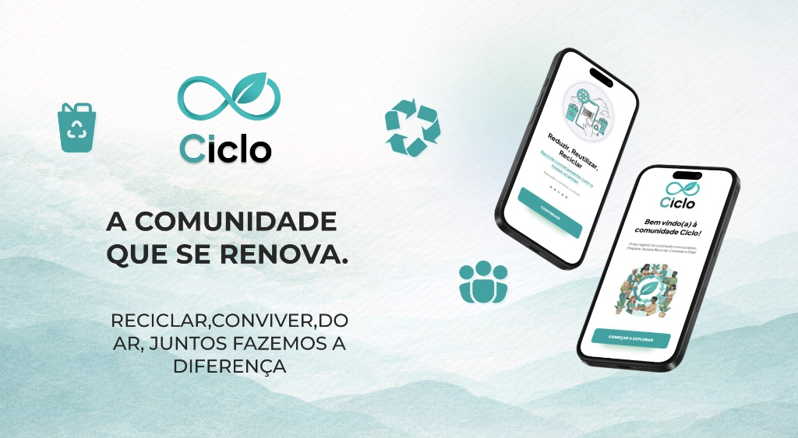

UI/UX DesignCiclo — Recycling & Community
"A comunidade que se renova. Reciclar, conviver, doar."
Aplicação móvel focada na conscientização ambiental, doação comunitária e reciclagem interativa. Apresenta scanner inteligente de resíduos e integração comunitária.